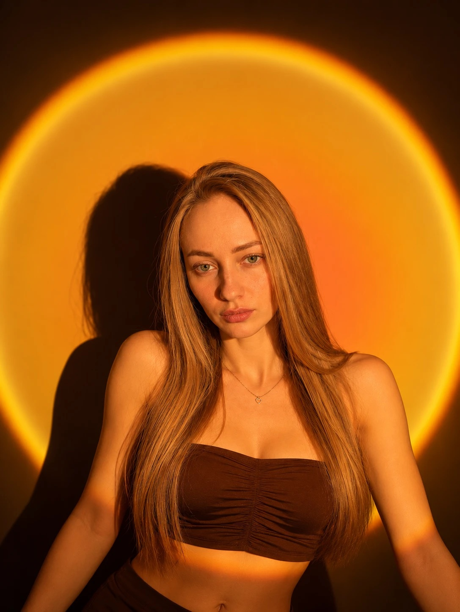

Elizabeth Astor
Превращаю твою историю в мультик. Для блога, подарка или рекламы. И учу делать такие же.
Заказать или научиться
Превращаю твою историю в мультик. Для блога, подарка или рекламы. И учу делать такие же.
Заказать или научиться